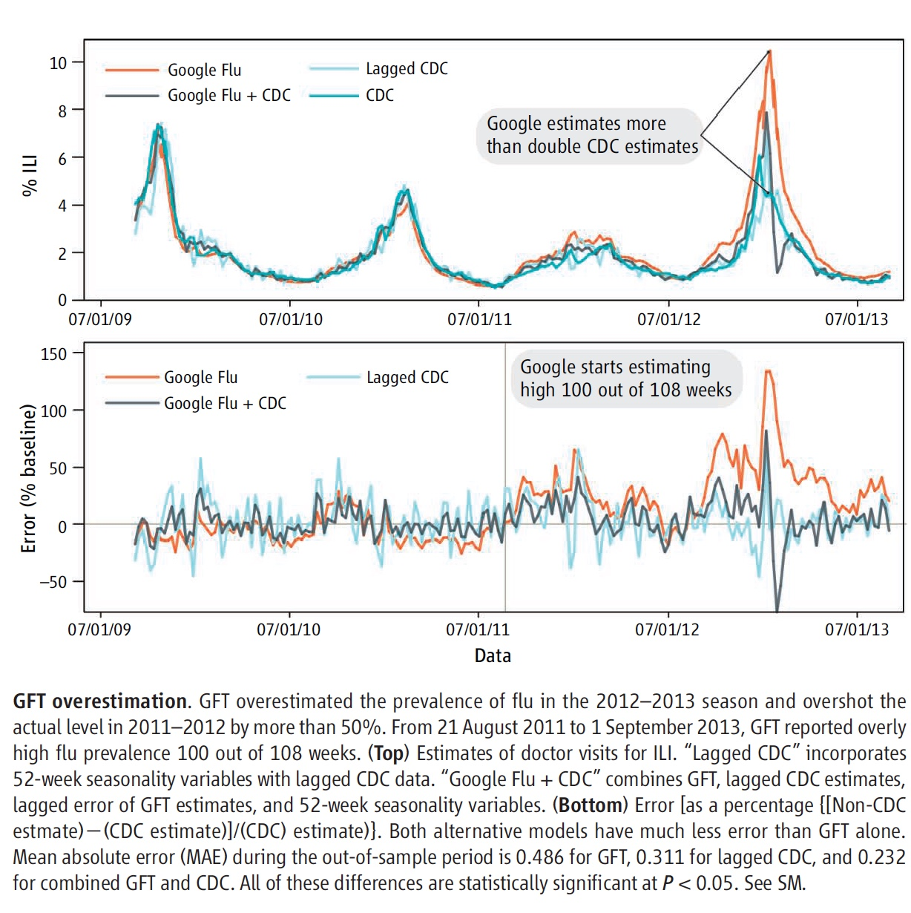

‘Google Flu’ and Hadley Wickham’s EMBL Review
Here is my review of “The Parable of Google Flu” and Hadley Wickham’s (2019) presentation of “Data visualization and Data Science”.
Part 1: “The Parable of Google Flu: Traps in Big Data Analysis”

Lazer, David, Kennedy, Ryan, King, Gary, and Vespignani, Alessandro, 2014. The Parable of Google Flu: Traps in Big Data Analysis. *Science*, [online\] 343(6176), pp.1203-1205. Available at: https://www.science.org/doi/full/10.1126/science.1248506 [Accessed 27 September 2022].
Critique on:
i.Big data analytics pitfall
According to the authors (2014), ‘Big data hubris’ is the “often implicit assumption that big data are a substitute for, rather than a supplement to, traditional data collection and analysis”. This relates to the issue that quantity of data does not mean quality. Big data analytics fall to the concerns of measurement and construct validity issues, as well as reliability and dependency difficulties. This is essentially referring to the instruments used to measure the observations and data are not the best fit for producing the most valid and reliable data analysis and subsequent conclusion. Furthermore, Google heavily relies on algorithms to estimate future flu trends. This can be seen in the figure below. GFT overestimates the prevalence of flu during flu seasons, such as the 2012-2013 season seen in the figure. This is viewed as Google’s most common error, and as resulted in a panic instigated by the media (Lazer et al. 2014).

ii.Overfitting and overparameterization.
According to Lazer and colleagues (2014), the Google Flu Trends (GFT) of 2013 have been “persistently overestimating flu prevalence for a much longer time” than just nine years ago. This is primarily due to errors associated with not being randomly distributed; this has been an issue with Google’s flu data analysis since even the 2011-2012 flu season (Lazer et al. 2014). Errors included using “last week’s errors [to] predict this week’s errors (temporal autocorrelation), and the direction and magnitude of error varies with the time of year (seasonality)” (Lazer et al. 2014). In other words, the GFT avoids the traditional use of statistical methods by overlooking pertinent information and data. This refers back to Google’s use of algorithms and computer programs to estimate flu trends instead of depending on actual data collection. The authors (2014) conclude that although big data offer “enormous possibilities for understanding human interactions at a societal scale”, it is also important to consider “small data”, as it provides supplemental perspective to data analyses.
Part 2: Hadley Wickham’s (2019) presentation of “Data Visualization and Data Science”

Link to the Video- Hadley Wickham (2019): Data Visualization and Data Science
Name the technologies/techniques Wickham introduced. What are his main points? Summarize and comment.